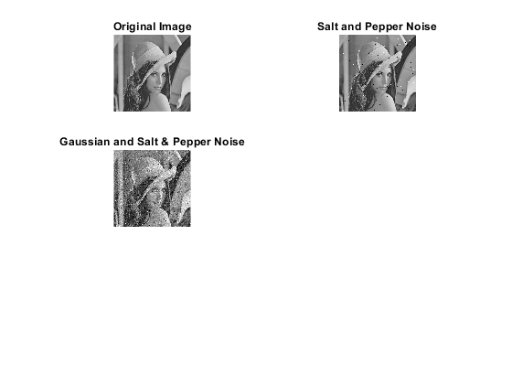

ECE 313 Final Project
TOPIC: Image Processing
Group Members: David Hardy, Francis Chambers
PAPER: Switching Bilateral Filter With a Texture/Noise Detector for Universal Noise Removal
Contents
Problem Formulation
A key probelm in image processing is removing noise while keeping the other characteristics of the image intact. Image noise is the distorted exposure and colour information that a pixel may contain. An image's noise can be represented Gaussian noise and impulse noise. Gaussian noise is the noise distributed over an image's pixel under a normal distribution. Impulse noise is noise which is added to some portion of the image's pizels and is usually caused by transmission errors. There have been many filters designed to detect and correct impulse noise, however, it would be ideal to have a universal filter that can detect and remove both Gaussian and impulse noise.
Proposed Solution
Talk here
Data Sources
Write shit here
Solutions
First we distribute noise over the image.
I = imread('lena_image.png'); I = rgb2gray(I); % Convert to a grayscale image subplot(3,2,1),imshow(I); title('Original Image'); % Add Salt and Pepper Noise (Impulse noise) sp_noise = 0.01; Isp = imnoise(I, 'salt & pepper', sp_noise); subplot(3,2,2),imshow(Isp); title('Salt and Pepper Noise'); % Add Gaussian Noise In = imnoise(Isp, 'gaussian'); subplot(3,2,3),imshow(In); title('Gaussian and Salt & Pepper Noise'); Inew = In; % Inew will be the image where pixels are modified
Then we apply the algorithm to filter the image Constants
[m,n] = size(In); N=2; p = 33; % any value in the range [25,40] is good (according to researchers) for i=N+1:m-N-1 for j=N+1:n-N-1 % Omega is the set containing the pixels in the (N+1)x(N+1) window % Omega=[In(i-1,j-1), In(i-1,j), In(i-1,j+1), In(i,j-1), In(i,j),... % In(i,j+1), In(i+1,j-1), In(i+1,j), In(i+1,j+1)]; [Omega0,Omega1,Omega2,Omega3,Omega4]= getWindowPoints(In,i,j,N); [SQMV,SQMD_B,SQMD_C] = medianVector(Omega1,Omega2,Omega3,Omega4); end end print('done');